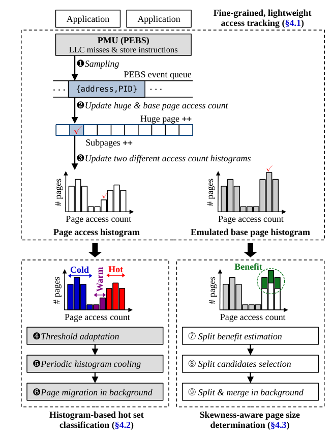
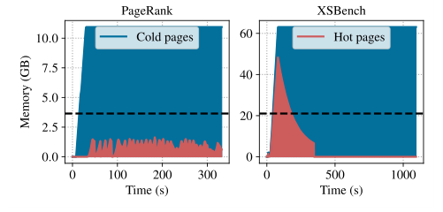
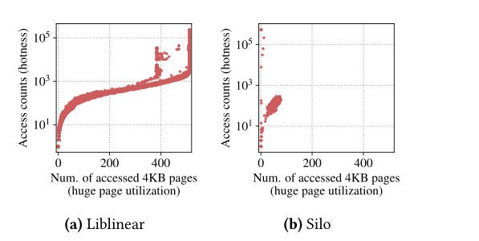
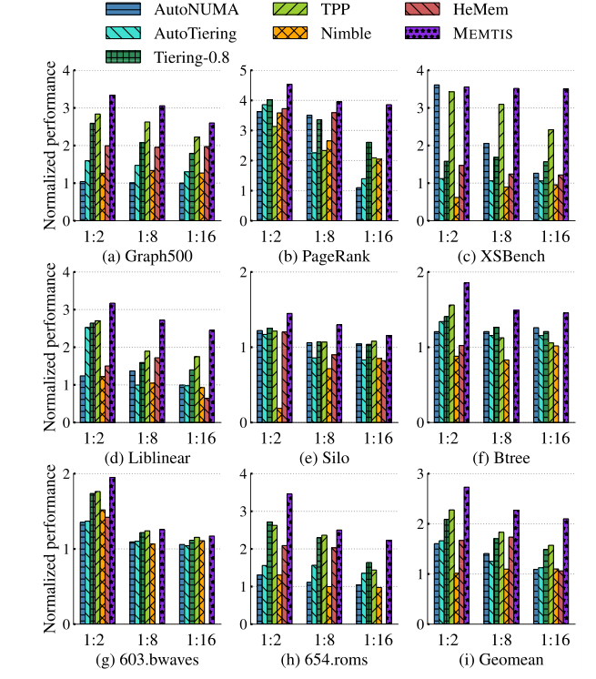
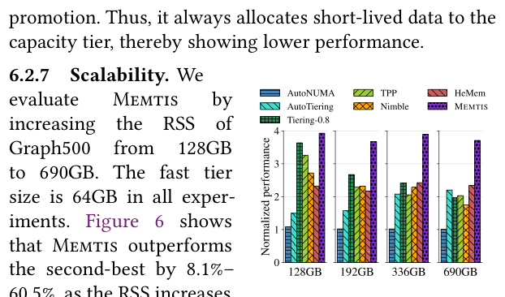
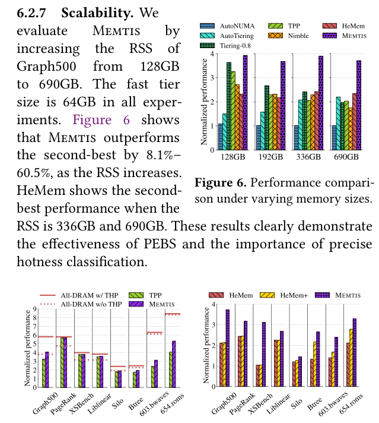
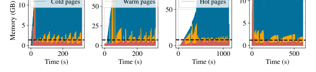
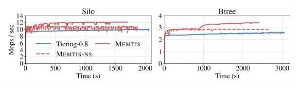
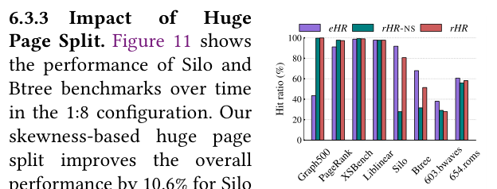

Memtis: Efficient Memory Tiering with Dynamic Page Classification and Page Size Determination
This page was written by an AI model to give a high-level overview of the paper. Please check the paper for detail: ACM Digital Library.
Memory is now the dominant line item in server cost (about 37.1% at Meta, about 50% at Microsoft Azure, as the paper cites), and memory-hungry workloads such as graph processing and ML keep growing. Tiered memory, pairing fast DRAM with a slower, cheaper capacity tier such as NVM (Optane DCPMM) or CXL-attached memory, is the standard answer. For tiering to pay off, the OS must do two things well: place the truly hottest pages in the fast tier, and pick a page size that gets the TLB benefit of huge pages without wasting fast tier capacity on cold data that rides along inside them.
The paper's analysis of prior tiering systems (AutoNUMA, AutoTiering, Tiering-0.8, TPP, Nimble, HeMem) finds both goals missed. Every system classifies pages as hot using some mix of recency and frequency against a static, pre-configured threshold (often "accessed once or twice in a scan interval"), without ever looking at how access counts are actually distributed across the whole page population. The result, shown concretely for HeMem in the paper's Figure 2, is a hot set that is either far smaller than the fast tier (wasting capacity on arbitrary cold pages) or far larger than it (leaving tiering to pick an arbitrary subset). Separately, systems that use Transparent Huge Pages (THP) treat an entire 2MB huge page as hot if any part of it is accessed, but the paper measures (Figure 3) that for workloads like Silo only 5 to 15% of a huge page's subpages are actually touched, so promoting the whole page wastes most of the fast tier memory it occupies.
Memtis's key idea is to stop reasoning about individual pages against a fixed cutoff and instead track the full access-frequency distribution of all allocated pages, then derive hot/warm/cold thresholds from that distribution so the hot set's size tracks the fast tier's actual capacity. The same distributional view, applied at subpage granularity, tells Memtis when a huge page's hotness is concentrated in a few subpages rather than spread evenly, so it can split only the huge pages where splitting will actually help.
Mechanically, a kernel thread (ksampled) uses Intel PEBS to sample LLC load misses and store instructions with exact addresses, feeding two compact 16-bin exponential histograms: one over pages (and subpages) for hot-set sizing, and an "emulated base page" histogram that estimates what the hit ratio would be if huge pages were never used. A second kernel thread (kmigrated) periodically recomputes hot/warm/cold thresholds from the histogram so the hot set matches the fast tier size, migrates pages in the background (never on the page-fault critical path), and periodically halves all access counts to keep the histogram an exponential moving average of recent behavior. When the gap between the emulated base-page hit ratio and the real hit ratio is large enough, Memtis picks the most access-skewed huge pages and splinters them, moving only their hot subpages to the fast tier.
Across eight memory-intensive benchmarks and three fast:capacity tier ratios (1:2, 1:8, 1:16) with NVM as the capacity tier, Memtis beats the best of six state-of-the-art tiering systems by up to 169.0%, and by 33.6% on average (geomean) over the second-best system in each case, in 23 of 24 configurations. Its dynamic huge page split adds up to a 19.9% further performance gain and cuts memory bloat by up to 45.4%, while keeping CPU overhead under 3% of one core (2.016% measured on average) and metadata memory overhead under 0.195% of the footprint.

Key takeaways
- Prior tiering systems classify pages hot/cold with static thresholds on recency or frequency, so the resulting hot set is usually smaller or larger than the fast tier, not equal to it (demonstrated for HeMem in Figure 2).
- Memtis instead builds a 16-bin exponential histogram of page access counts and dynamically sets the hot/warm/cold thresholds so the hot set's size tracks the fast tier capacity.
- Access tracking uses Intel PEBS sampling of LLC misses and stores, giving exact addresses (including subpage addresses inside huge pages) with self-tuned sampling rates to bound CPU use under 3%.
- A second histogram, over emulated 4KB base pages, estimates the hit ratio Memtis would get without huge pages; when that estimate beats the real hit ratio by enough, Memtis splits the most skewed huge pages and migrates only their hot subpages.
- Evaluated against AutoNUMA, AutoTiering, Tiering-0.8, TPP, Nimble and HeMem on 8 benchmarks, Memtis wins 23/24 configurations, beating the second-best by 33.6% on average (geomean) and up to 169.0%, with <3% CPU and <0.195% memory overhead.
From per-page heuristics to distribution-aware tiering
What existing tiering systems get wrong, how Memtis tracks access, classifies hotness, and decides page size, and how it is implemented in Linux.
1 · Background: the two decisions a tiered-memory OS must make
A tiered memory system manages at least two kinds of memory with different latency, bandwidth, and cost: a fast tier (local DRAM) and a capacity tier (NVM such as Optane DCPMM, or CXL-attached memory). It must continuously decide (1) which pages belong in the fast tier right now, migrating hot pages in and cold pages out, and (2) what page size to use for each region, since huge pages reduce address-translation overhead but make migration coarser and can waste fast tier space if only part of the huge page is actually hot.
2 · Problem: access tracking trade-offs
The paper groups existing access-tracking mechanisms into three families, summarized in its Table 1.
| Mechanism | Examples | Weakness |
|---|---|---|
| Page-fault based | AutoNUMA, AutoTiering, Tiering-0.8, TPP, HotBox | Adds latency on the critical path; tracking granularity is the page |
| Page table scanning (reference bit) | Nimble, MULTI-CLOCK, TMTS | Scanning cost grows with memory size; cannot see subpage accesses inside a huge page; accuracy trades off against scan interval (shown for DAMON in the paper's Figure 1, where a 5ms/fine-grained configuration reaches 72.85% CPU overhead) |
| Hardware event sampling (PEBS/IBS) | HeMem, Memtis | Reports exact addresses including subpage addresses, but overhead scales with sampling rate |
The paper's conclusion: sampling-based tracking is the only family that is both off the critical path and capable of subpage-granularity accuracy, provided the sampling rate is kept under control.
3 · Problem: static thresholds misjudge the hot set size

Even accurate tracking is wasted if the hotness decision ignores the fast tier's actual size. HeMem promotes any page whose access count passes a fixed threshold and halves all counts once any page's count hits a fixed cooling threshold. The paper's Figure 2 plots HeMem's identified hot set size over time for PageRank and XSBench against the fast tier capacity (dashed line): for PageRank the hot set stays well below capacity for the whole run, wasting fast tier space on arbitrary cold pages, while for XSBench the hot set exceeds capacity between 50s and 180s, forcing HeMem to place an arbitrary subset of the hot pages. No single static threshold fixes both failure modes at once, let alone across different workloads and fast tier sizes.
4 · Problem: huge pages hide access skew

The paper samples PEBS accesses for Liblinear and Silo under THP and plots each huge page's access count against its utilization (number of its 512 subpages that were ever accessed), shown in Figure 3. Liblinear's hot huge pages have high utilization, so promoting the whole huge page is efficient. Silo's hot huge pages show no such correlation: a huge page can have a high access count while only a handful of its subpages are ever touched, so promoting it wholesale moves mostly cold, unused subpages into the scarce fast tier.
5 · Fine-grained, lightweight access tracking with PEBS
Memtis's ksampled kernel thread samples two PEBS event types: retired LLC load misses and retired store instructions, with initial sampling periods of 1-in-200 and 1-in-100,000 events respectively.
- Every sample carries an exact faulting address and process ID, from which ksampled increments the access count of the corresponding base page, huge page, and subpage (if applicable).
- ksampled tracks the exponential moving average of its own CPU usage and adjusts the PEBS sampling period (via
__perf_event_period) to keep CPU usage near a configurable cap, 3% of one core by default, using a 0.5% hysteresis band so it does not oscillate. - Measured across all evaluated benchmarks, ksampled averages 2.016% of a single CPU (up to 3.0%), with an average performance overhead of 0.922% (up to 2.384%).
A page's hotness factor (𝐻) is the exponential moving average of its access count (𝐶), compensated for page type: 𝐻 = 𝐶 for a huge page, 𝐻 = 𝐶 × 512 for a base page, since a base page is 512 times less likely to be sampled per unit of true access rate than a huge page covering the same 512 subpages.
6 · Histogram-based hot/warm/cold classification and threshold adaptation
Memtis maintains a page access histogram: 16 bins on an exponential scale, where bin 𝑛 covers hotness factors in [2ⁿ, 2ⁿ⁺¹). Updating it on each sample is a single bin-count move (decrement the old bin, increment the new one). The exponential scale keeps the histogram small (16 × 8-byte counters = 128 bytes) and matches the skewed (Zipf/Pareto-like) shape of real access distributions.
- Every 100,000 sampled events, Memtis recomputes three threshold bin-indices: 𝑇hot, 𝑇warm, 𝑇cold.
- 𝑇hot is found by walking the histogram from the highest bin downward, accumulating page sizes, until adding the next bin would overflow the fast tier capacity. This greedily fills the fast tier with the hottest pages the histogram can resolve.
- If the resulting hot set already fills at least 90% of the fast tier (α = 0.9), 𝑇warm = 𝑇hot: there is no need for a buffer zone. Otherwise 𝑇warm = 𝑇hot − 1, creating a warm band of pages just below the hot threshold that are excluded from demotion unless the fast tier genuinely needs the space.
- 𝑇cold = 𝑇warm − 1. Pages at or below it are demotion candidates; pages strictly between 𝑇cold and 𝑇hot are the warm set and are left in place.
The warm band exists because, without it, pages hovering near the hot threshold would be demoted and then quickly re-promoted once they are sampled as hot again, generating migration traffic for no benefit.
7 · Periodic cooling and background migration
Because 𝐻 is meant to be an exponential moving average, Memtis periodically halves every page's access count (every 2 million sampled records), which, thanks to the exponential bin scale, is implemented as simply shifting every bin's count one position left in the histogram. Thresholds are then recomputed on the shifted histogram.
- kmigrated, one per memory tier, wakes every 500ms.
- The capacity-tier kmigrated promotes pages from a promotion list (pages whose 𝐻 crossed 𝑇hot) into free fast-tier space.
- The fast-tier kmigrated demotes only when free fast-tier space drops below a 2% watermark, first draining cold pages from a demotion list, then warm pages only if cold pages alone do not free enough space.
- All promotion and demotion happens in these background threads, never inside the page fault handler, so Memtis adds no latency to the application's critical path.
Results for this classification mechanism (hot-set accuracy, migration traffic, overall performance) are discussed in the Evaluation tab.
8 · Skewness-aware page size determination
Memtis uses THP by default, but tracks a second, parallel histogram, the emulated base page histogram, built over 4KB-granularity access counts regardless of the OS page size actually in use (including subpage counts inside huge pages). Running the same threshold algorithm on this histogram yields 𝑒𝐻𝑅, the hit ratio Memtis would achieve if it placed only base pages in the fast tier. The actually realized hit ratio, 𝑟𝐻𝑅, is measured directly from sampled accesses that land in the fast tier.
- Every time at least a quarter of all allocated pages' worth of events have been sampled, Memtis compares 𝑒𝐻𝑅 to 𝑟𝐻𝑅. If 𝑒𝐻𝑅 − 𝑟𝐻𝑅 ≥ 5%, a split pass is triggered.
- The number of huge pages to split, 𝑁s, scales with the estimated benefit (𝑒𝐻𝑅 − 𝑟𝐻𝑅), the relative latency gap between tiers (Δ𝐿 / 𝐿fast), and the number of distinct huge pages recently accessed (approximated from total samples divided by average samples per huge page, scaled by β = 0.4), capped at the number of distinct huge pages seen.
- Each huge page's skewness factor is 𝑆ᵢ = (Σⱼ 𝐻ᵢⱼ²) / 𝑈ᵢ², where 𝐻ᵢⱼ is subpage 𝑗's hotness and 𝑈ᵢ is the huge page's utilization (count of its subpages above the base-page hot threshold). Squaring both terms sharpens the distinction between a page with a few very hot subpages and one that is uniformly warm.
- At every cooling interval, kmigrated recomputes skewness factors for all huge pages (since cooling already scans every page) and bins them by skewness range, from which the top-𝑁s most skewed huge pages are chosen as split candidates.
- kmigrated splinters each candidate in the background: it classifies subpages as hot or cold base pages using their individual hotness, frees any all-zero (never-touched) subpages outright, and migrates the remaining hot subpages to the fast tier. Base pages are later coalesced back into a huge page only when every constituent subpage is hot, which the paper notes rarely happens since THP is already enabled and splitting is done conservatively.
Evaluation of the split mechanism's effect on hit ratio, memory bloat, and migration traffic is covered in the Evaluation tab.
9 · Implementation
Memtis is implemented in Linux kernel v5.15.19 (5,166 changed lines). It stores per-huge-page and per-subpage metadata in otherwise-unused struct page slots (indices 3 to 131) inside the kernel's existing compound_page structure, adding zero extra memory for huge pages. Base pages have no spare field in struct page itself, so Memtis instead repurposes an 8-byte padding field in the struct page of a page table's PTE page frame as a pointer to a dedicated 4KB metadata page holding 512 base-page metadata entries. In the worst case, where every page is a base page, this adds at most 0.195% memory overhead relative to the application's footprint.
Evaluation
Setup, then the paper's key figures in order, with the numbers it reports.
Experiments run on a single socket (to avoid NUMA effects, following prior tiering work) of a dual-socket server, to isolate the fast/capacity tier latency gap from cross-socket effects. Two tiered configurations are used to show generality: a real NVM capacity tier and an emulated CXL capacity tier.
| Item | Value |
|---|---|
| Platform | Dual-socket Intel Xeon Gold 5218R @2.1GHz (20 cores/socket); per socket, 6×16GB DDR4 DRAM + 6×128GB Intel Optane DCPMM |
| Tiered settings | DRAM + NVM (Optane, load latency ≈300ns); DRAM + emulated CXL memory (cross-NUMA DRAM, load latency ≈177ns, based on prior reports that CXL adds 70 to 90ns to local memory access) |
| Fast:capacity ratios | 1:2 (fast tier = 33% of RSS), 1:8, 1:16 (fast tier = 5.9% of RSS); also 2:1, Meta's production target ratio |
| Workloads | Graph500, PageRank (GAP/Twitter dataset), XSBench, Liblinear (KDD12), Silo (YCSB-C, Zipfian), Btree, SPEC CPU 2017 603.bwaves and 654.roms; 20 threads each |
| Baselines | AutoNUMA, AutoTiering, Tiering-0.8, TPP, Nimble, HeMem; also all-NVM-with-THP as the normalization baseline, and all-DRAM for reference |
| Metric | Application performance normalized to running entirely on the capacity tier (all-NVM, THP enabled) |
Memtis wins almost every tiering configuration tested

What it shows. Performance of Memtis and six baselines, normalized to all-NVM-with-THP, across 8 benchmarks and 3 tiering ratios (1:2, 1:8, 1:16) with NVM as the capacity tier, 24 configurations total. Memtis is best in 23/24, outperforming the second-best system by 33.6% on average (geomean). TPP is second-best in 14/24 cases but is the worst performer for PageRank at 1:2. Per-benchmark gains over the second-best: Graph500 16.3 to 17.7%, PageRank 10.2 to 47.9%, Liblinear 17.3 to 43.7%, Silo 15.9%/21.2%/7.1% (1:2/1:8/1:16), Btree 15.5 to 18.9%, 603.bwaves 1.3 to 10.6%, 654.roms 5.7 to 35.9%. HeMem could not be run for several benchmarks at 1:8 and 1:16 because its small-allocation over-provisioning made the configured fast tier size unenforceable.
What to take from it. The gain is not from one mechanism dominating everywhere; which baseline comes second varies by workload (TPP for most, AutoNUMA for XSBench at 1:2 because it never demotes, Tiering-0.8/TPP for 603.bwaves). Memtis's consistency across this variety is the paper's central performance claim: distribution-aware sizing of the hot set adapts to whatever the workload's access pattern happens to be, rather than depending on a threshold tuned for one pattern.
The advantage holds as memory size scales up

What it shows. Graph500 is scaled from 128GB to 690GB RSS with a fixed 64GB fast tier. Memtis outperforms the second-best system by 8.1 to 60.5% across these sizes. HeMem is the second-best system specifically at the 336GB and 690GB RSS points.
What to take from it. The paper reads this as evidence that PEBS-based sampling and precise hotness classification remain effective as the capacity tier grows much larger than the fast tier, a regime page-table scanning approaches scale poorly into (Section 2.1's argument).
Memtis approaches all-DRAM performance even at Meta's 2:1 production ratio

What it shows. Under the 2:1 fast:capacity configuration (TPP's original target environment, Meta's default production ratio), the figure compares TPP, Memtis, and all-DRAM performance (with and without THP) as reference lines. Memtis is comparable to all-DRAM except on the SPEC benchmarks, and beats TPP by 6.1 to 33.3% when the sampled hot set exceeds the fast tier's capacity. When the true hot set is small relative to the fast tier (PageRank, XSBench, Liblinear), Memtis performs similarly to TPP, since it promotes pages as soon as they are sampled once, reaching over 99.5% fast-tier access ratio in that case.
What to take from it. Even in a generous fast:capacity ratio where almost everything could fit in DRAM, Memtis's advantage over TPP persists specifically when the working set does not comfortably fit, which is the harder and more realistic case for a production tiering deployment.
HeMem's static thresholds, not CPU contention, explain its lower performance

What it shows. To isolate HeMem's design from confounders, the authors run with 16 threads (leaving cores free for HeMem's own sampling threads) and also test "HeMem+", where HeMem's fast tier is enlarged to match Memtis exactly (removing its over-allocation handicap from Table 3, which lists per-benchmark over-allocation sizes from 60MB for Graph500 up to 9800MB for Btree). Memtis still consistently outperforms both HeMem and HeMem+. In PageRank, HeMem+'s extra 500MB of fast tier capacity brings no improvement, because it is filled with arbitrary cold pages (consistent with Figure 2). In Btree, Memtis beats HeMem+ despite the latter's large 9800MB capacity advantage. A version of Memtis using only histogram-based classification (no split) is just 1.4% below HeMem+; adding skewness-aware split brings a 22.6% improvement over HeMem+.
What to take from it. This result pins HeMem's shortfall specifically on its static-threshold hotness classification rather than on resource contention or fast tier sizing, and separately quantifies the two Memtis mechanisms' individual contributions on Btree (roughly a wash for histogram classification alone, and the full 22.6% gain coming from huge page splitting).
Memtis's identified hot set tracks the fast tier size closely

What it shows. The amount of hot, warm, and cold memory Memtis identifies over time, under two tiering settings, plotted against the fast tier size (dashed line). The identified hot set stays close to the fast tier capacity; when it falls short, warm pages fill the remaining space. The hot set can briefly exceed the fast tier size when many warm/cold pages become hot before the next threshold adaptation, but Memtis recovers quickly.
What to take from it. This is the paper's direct visual confirmation of its central claim (contrast with HeMem's Figure 2): distribution-aware threshold adaptation keeps the hot set sized to the resource it is meant to fill, something the paper states is "impossible without considering the overall memory access distribution."
The warm set and huge page split both cut unnecessary migration traffic

What it shows. Migration traffic and performance with and without the warm set, and with and without huge page split. Not migrating warm pages (since they may cool or heat up again) reduces migration traffic by 2.7 to 64.8%. Splitting huge pages further reduces traffic, since smaller pages migrate cheaper. The one exception is 603.bwaves, where keeping a large warm set actually hurts performance, because it slows down reclaiming free fast-tier space for the benchmark's many short-lived allocations.
What to take from it. The warm set is a net win for migration-traffic reduction, but the paper is explicit that it is not free: workloads dominated by short-lived allocations can be hurt by retaining warm pages instead of quickly freeing fast tier space.
Huge page splitting closes most of the gap to the achievable hit ratio

What it shows. Three hit ratios per benchmark under the 1:8 configuration: 𝑒𝐻𝑅 (estimated ceiling using only base pages), 𝑟𝐻𝑅 (Memtis's actual hit ratio with splitting), and 𝑟𝐻𝑅-ns (actual hit ratio without splitting). Silo shows an eHR minus rHR-ns gap of 64.1%, which splitting closes by improving the real hit ratio by 52.91%. Btree's gap is 36.42%, closed by a 19.92% hit ratio improvement. 654.roms gains only 2.25% hit ratio and no performance improvement from splitting, though migration traffic drops 26.6%. 603.bwaves has low rHR regardless of splitting, because its repeated short-lived allocations keep forcing hot pages back out to free fast tier space. Graph500 and PageRank show eHR below rHR, meaning there is no skew to exploit and splitting is correctly skipped.
What to take from it. The eHR/rHR comparison is Memtis's own trigger signal as well as its evaluation metric, so this figure validates that the trigger condition (split only when the estimated gain is large) correctly separates workloads that benefit (Silo, Btree) from those that do not (Graph500, PageRank, 603.bwaves).
FAQ
Q·What is Memtis solving, in one sentence?▾
How to decide, continuously and automatically, which pages belong in a small fast memory tier and which page size to use for them, without relying on a fixed threshold that only works for some workloads and fast tier sizes.
Q·Why not just use the page table's reference/dirty bit to track access, as Linux's own NUMA balancing does?▾
Scanning page table entries scales poorly as memory grows (more pages and page tables to scan), and the reference bit only says whether a page was touched at all during a scan interval, not how often, and it cannot see which subpages inside a huge page were touched. Hardware sampling (PEBS) reports an exact address per sample, so it can distinguish access frequency and see inside huge pages, at the cost of a sampling-rate-dependent CPU overhead that Memtis caps automatically.
Q·Why PEBS instead of triggering tracking from page faults, like AutoNUMA or TPP?▾
Page-fault-based tracking adds latency directly on the application's critical path, because the hotness decision and sometimes the migration happen inside the fault handler. PEBS samples passively in the background; Memtis's migration decisions are also made entirely off the critical path, in the kmigrated kernel threads.
Q·What exactly is the "histogram" and why does it use exponential bins?▾
It is a 16-bucket count of how many pages have an access-frequency ("hotness") value in each bucket's range, where bucket 𝑛 covers [2ⁿ, 2ⁿ⁺¹). Real access patterns are highly skewed (Zipf-like): a few pages are accessed orders of magnitude more than most. A linear scale would waste almost all its resolution on a tiny range near zero; the exponential scale spreads resolution across orders of magnitude, and happens to make the periodic "halve every count" cooling step a simple one-bin shift.
Q·How does Memtis decide the hot/warm/cold thresholds, concretely?▾
Every 100,000 sampled events, it walks the histogram from the hottest bin downward, adding up page sizes, until adding the next bin would exceed the fast tier's capacity; that bin boundary becomes the hot threshold. If the resulting hot set already fills about 90% or more of the fast tier, there is no separate warm band. Otherwise, one bin below the hot threshold becomes a "warm" band that is protected from demotion unless the fast tier genuinely runs low on space, and the bin below that is the cold threshold.
Q·What is the "warm" set for, if it is not promoted or demoted?▾
It holds pages whose hotness sits just below the hot threshold, pages likely to become hot again soon. Demoting them immediately and promoting them back shortly after wastes migration bandwidth for no lasting benefit, so Memtis leaves them in place unless it genuinely needs to free fast tier space, in which case it demotes cold pages first and only touches warm pages if that is not enough.
Q·How does Memtis decide when to split a huge page?▾
It maintains a second histogram over 4KB granularity (even for pages that are actually mapped as 2MB huge pages) to estimate the hit ratio it could achieve using only base pages (eHR). It compares that to the real, currently achieved hit ratio (rHR). If the gap (eHR minus rHR) reaches 5% or more, over a long enough sampling window, it triggers a split pass; otherwise huge pages are left alone.
Q·What is the "skewness factor" measuring, in plain terms?▾
For a given huge page, it is the sum of its subpages' squared hotness values divided by its utilization (number of hot subpages) squared. A huge page where hotness is concentrated in few subpages (low utilization, high individual hotness) scores high; a huge page that is uniformly warm across all subpages scores low. Memtis splits the highest-scoring huge pages first, since those are the ones wasting the most fast tier space per hot byte.
Q·Does splitting a huge page lose its TLB benefit permanently?▾
Not necessarily. Memtis will coalesce split base pages back into a huge page, but only once every one of its constituent base pages has become hot, since merging is as expensive as splitting (page table updates, TLB shootdown). The paper notes this rarely happens in practice, because THP is already enabled by default and splitting itself is triggered conservatively, only when the estimated benefit clears the 5% bar.
Q·How does Memtis compare to TPP, which is already in production at Meta?▾
TPP extends 2Q-LRU-style promotion (pages accessed twice or more are promoted) using page faults and periodic scanning. It has no distribution-aware sizing, so its identified hot set can exceed the fast tier capacity, causing continuous back-and-forth migration, and it reacts to newly freed fast tier space slowly because page table scanning does not scale well. Memtis beats TPP by 6.1 to 33.3% in the paper's 2:1 configuration specifically when the true hot set does not comfortably fit the fast tier; the two are comparable when it does.
Q·How does Memtis compare to HeMem, the other PEBS-based system?▾
HeMem already uses PEBS for fine-grained tracking, so the two share a tracking mechanism, but HeMem classifies hotness with a static, pre-configured threshold and halves all counts when any single page's count hits a fixed cap. The paper shows (Figure 2) this produces hot sets that are mis-sized relative to the fast tier, and (Figure 8) that this gap persists even when CPU contention and fast-tier-size handicaps are controlled for.
Q·How does Memtis relate to TMTS, Google's warehouse-scale tiering system?▾
The paper discusses this as a difference in goal rather than a strict comparison. TMTS aims to offload a modest, roughly 25% slice of DRAM to a slower tier while keeping performance impact under 5%, assuming the hot working set fits in the fast tier; it leans on application-level hints (e.g., in TCMalloc) to avoid access skew within huge pages, splitting all demoted (cold) huge pages unconditionally. Memtis targets settings where the capacity tier is much larger relative to the fast tier (1:2 to 1:16) and where the hot working set may not fit, and it splits only the huge pages whose access skew makes splitting worthwhile, using no application hints.
Q·Does Memtis work with CXL memory, which was not commercially available CXL hardware at the time?▾
The authors test this with emulated CXL memory (a remote NUMA node with its interconnect frequency reduced to add roughly 70 to 90ns of latency, per prior measurements) rather than real CXL hardware, since none was publicly available. Against TPP, which was designed specifically for CXL-style tiering, Memtis wins every tested benchmark by up to 32.8 to 102.9% depending on the workload, with the margin shrinking as the latency gap between tiers narrows relative to the NVM case.
Q·What does Memtis actually cost to run?▾
CPU: the PEBS sampling thread (ksampled) is capped at about 3% of one core and averages 2.016% across all benchmarks, translating to an average 0.922% (up to 2.384%) application slowdown. Memory: metadata is stored in otherwise-unused kernel structures (spare struct page slots for huge pages, a repurposed PTE page frame field for base pages), adding at most 0.195% of the application's memory footprint in the worst case where every page is a 4KB base page.